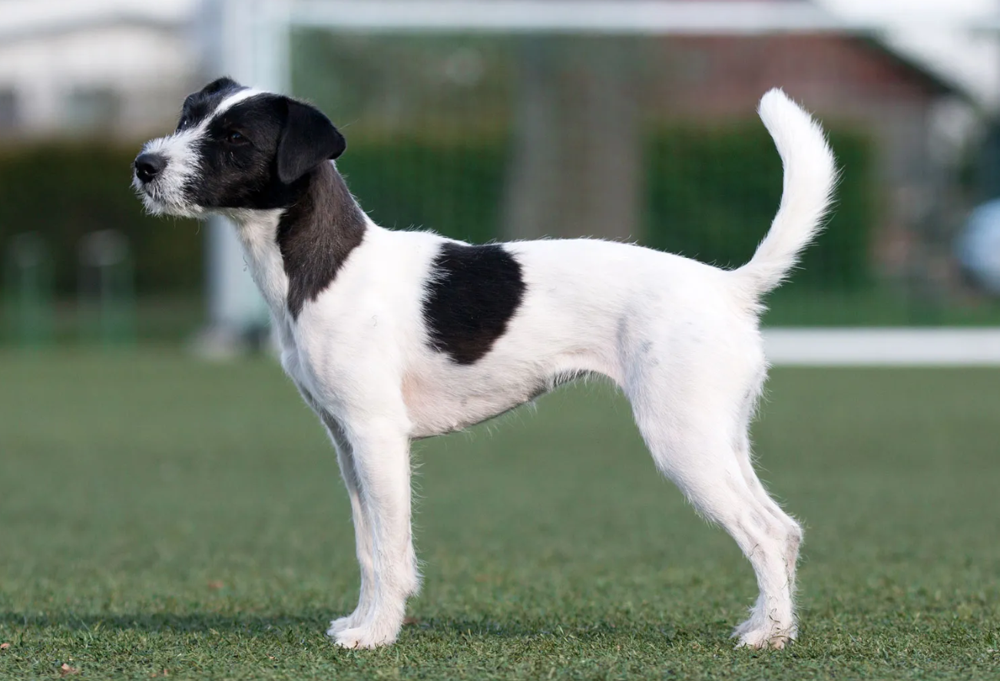

JACK
Weight:
13-17 lbs.
Height :
13 in.
14 in.
Length:
Short .
Color:
White, white with black or tan markings.
Longevity:
13 – 15 yrs.
Jack personality
The Jack Russell terrier is a happy, energetic dog with a strong desire to work. This breed is most happy when given companionship and a job to do. Digging is normal for a Jack Russell, especially if he decides it is his job to free your yard from rodents! Hunting ability is bred into them it is their nature. The desire to hunt combined with a high energy level makes training a must for the Jack Russell. You will never win a battle of wills with a Jack Russell.Because he is a baying terrier, the Jack Russell can be vocal. However, these dogs are alert and make good watchdogs. The breed is naturally assertive and may not tolerate young children or other animals in the home. They especially can be aggressive toward other dogs.
What to expect
Given the personality of the Jack Russell, this breed is not for everyone. The hunting instinct cannot be trained out of the breed. These dogs instinctively see the family cat or hamster as prey. Some may be able to learn to get along with other pets if brought into the home as a puppy, but a potential guardian needs to consider the possibilities beforehand.The Jack Russell terrier needs lots of exercise and a home with a large fenced yard is best. The Jack Russell has an urge to explore and hunt and will wander off many have been trapped for days in underground culverts and dens. If kept indoors, daily brisk walks are a must!The Jack Russell also enjoys going along on a hike or a long game of fetch. This is not the breed for you if you prefer a dog who will sit peacefully on the couch all day.
History of the Jack
The Jack Russell terrier is a true working terrier. The breed takes its name from the Reverend John Russell, who bred one of the finest strains of terriers for working fox in England. The Jack Russell is a baying terrier, meaning the dog should flush out the fox with his steady barking but is never to kill his prey. The Jack Russell has been strictly bred for hunting since its beginning in the early 1800s.Because of their broad genetic make-up, there is some variance in the standard of Jack Russell terriers. In fact, disagreement about leg length has caused the breed to be divided into separate breeds in England, where the longer legged dogs are called Parson Jack Russell terriers and the shorter legged dogs are called simply Jack Russell terriers.In America, despite the greater popularity of the short legged dogs, the long legged dogs are the breed officially recognized as the Jack Russell terrier. The breed has been popular with the horse crowd for years.Media exposure, especially the popularity of Moose, the terrier who plays Eddie on the television show Frasier, and Soccer, who stars in the children's show Wishbone, have catapulted the breed to popularity.The Jack Russell terrier is a newer member of the AKC terrier group, but that membership came amid protests from fanciers who feared AKC recognition was not good for the breed. The result is that two national associations exist for the breed, the original Jack Russell Terrier Club of America, and the newer AKC recognized Jack Russell Terrier Association of America.